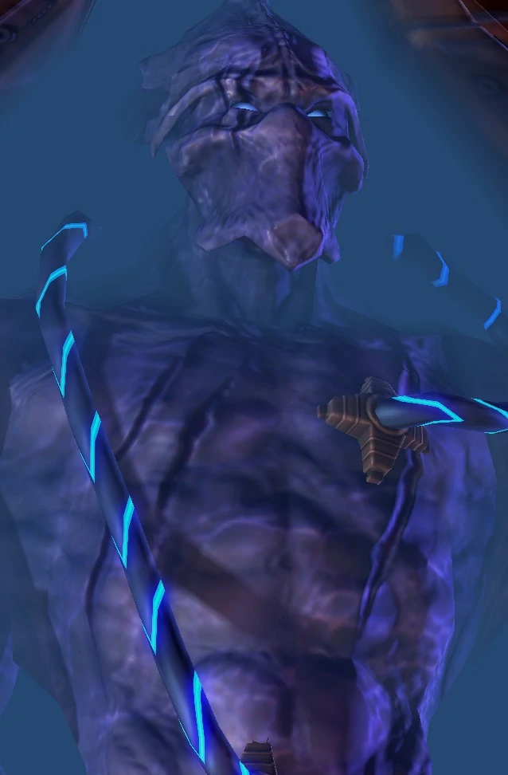

Бессмертный
| Бессмертный | |
|  | |
| Информация о юните | |
| Тип: | Наземная боевая единица |
| Описание: | Штурмовая единица. Может использовать Барьер для поглощения урона. |
| Построен из: | Завод робототехники |
| Стоимость: |  275 275  100 100  39 39  4 4 |
| Горячие клавиши: | I |
| Атака: Разрушители фазы | |
| Цели: | Наземные |
| Урон | 20(+2) |
| DPS: | 19.2 (+1.92) |
| Перезарядка: | 1.04 |
| Бонус: | +30 (+3) против бронированных |
| Бонус DPS: | +28.9 (+2.9) против бронированных |
| Радиус атаки: | 6 |
| Статистика юнита | |
| Защита: |  200 200  100 100  1 (+1) 1 (+1) |
| Атрибуты: | Бронированный Механический |
| Радиус обзора: | 9 |
| Скорость: | 3.15 |
| Занимаемое место в транспорте: | 4 |
| Силен против: | Осадный танк Сталкер Таракан |
| Слаб против: | Морпех Зилот Зерглинг |
Обзор
Бессмертные происходят от драгун. Их пилоты живут в стерильном питательном растворе, пропитанном микроскопическими машинами, что помогает сохранить их изуродованные тела. Машины восстанавливают стареющие ткани, уничтожают любые инородные тела, которые могут проникнуть в кабину (обычно из-за пробоин в корпусе), и регулируют частоту сердечных сокращений пилота, активность мозга и биологические функции. Бессмертные — одни из самых передовых аппаратных средств, когда-либо созданных протоссами. При пересадке бессмертных посвящают во имя Адуна, поскольку именно он лучше всех понял значение самопожертвования.
Дизайн
Бессмертные в два раза выше терранов в доспехах CMC. Они оснащены двумя двухфазными разрушителями в качестве основной формы атаки; они оказывают критически важную огневую поддержку легионам фанатиков против наземных целей, разворачивая их, когда протоссы сталкиваются с тяжелой огневой мощью противника. Эти взрывы могут легко пробить большие дыры в тяжелой обшивке, но их ограниченное поле огня не позволяет Бессмертным поражать воздушные цели. При развертывании бессмертные оказывают критически важную поддержку, уничтожая вражескую артиллерию и атакующих дальнего боя.
Бессмертные экипированы плетением брони, которое смягчает удары за счет рассеивания энергии. Кроме того, укрепленные щиты, используемые бессмертными, создаются путем переплетения спектров и длин волн различной интенсивности. Благодаря этому эти щиты невероятно плотные, способные смягчить мощные удары, такие как снаряды осадных танков или лезвия ультралисков, за счет рассеивания энергии. Когда оставшиеся драгуны были превращены в бессмертных, протоссы решили снабдить их этими щитами, чтобы еще больше сохранить своих самых древних и почтенных воинов. Первоначально щиты активировались только при ударе мощными атаками, что делало бессмертных более уязвимыми для колющих атак меньших врагов. К 2505 году щиты бессмертных были сильно усилены, что сделало бессмертных неуязвимыми для вражеских атак на короткие промежутки времени. Эти щиты были нецелесообразны для массового производства.
Ихан-рии создали вариант бессмертного, который служил роботизированным саркофагом для воинов, павших с честью в бою, продолжая нести их останки на войну.
История
Исторически сложилось так, что искалеченный ветеран-тамплиер мог добровольно продолжить службу, будучи пересаженным в драгунский экзоскелет. Эта почитаемая традиция была нарушена падением Айура, когда зерги заполонили святилище, посвященное созданию драгун. После Brood War искалеченные храмовники были пересажены в новые бессмертные экзоскелеты. Первые были на вооружении к 2502 году. Остальные драгуны были превращены в бессмертных. В результате в бессмертных живут одни из самых опытных и почтенных воинов армии протоссов.
В конце концов, бессмертные — вымирающий вид. Скоро никого не останется. К 2506 году только самые почитаемые герои тамплиеров могли стать бессмертными из-за ресурсов, необходимых для их производства. После Конца Войны Очистители начали перепрофилировать оболочки павших бессмертных в полностью автоматизированные боевые шагоходы.
После Конца Войны некоторые падшие храмовники решили использовать древние экзоскелеты, чтобы продемонстрировать свою приверженность идеалам, которые объединяли протоссов в трудные времена.
Игровая единица
Бессмертные, сброшенные призмами искривления, могут совершать набеги на вражеские постройки и расширения.
Бессмертные хорошо противостоят бронированным наземным юнитам, таким как тараканы и ультралиски. Если игрок-зерг использует эти юниты в избытке, бессмертных можно считать основным юнитом.